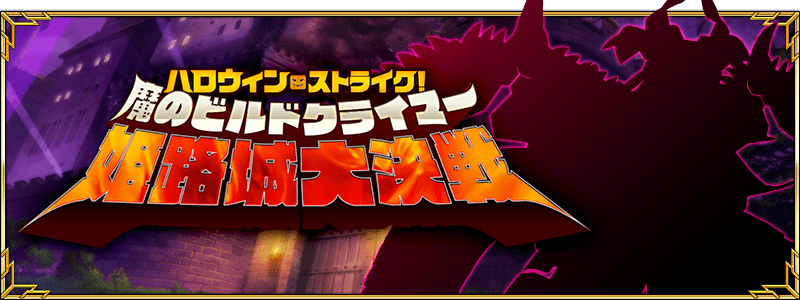
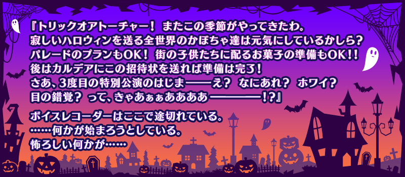

◆活動開始日◆
2017年10月25日(三)維修後
◆活動概要◆
舉辦期間限定活動「萬聖節・強襲！ 魔之建築攀登者／姬路城大決戰」！
從逐年特異點不斷變化，且不斷擴大的萬聖節活動會場傳來謎樣的SOS。
擔心不明發信者的SOS以及伊莉莎白的一行人，原本應該比照往年傳送到她所在的墓地才是...？
自2015年持續的萬聖節活動第3部就此完結！？
◆活動参加條件◆
只限通過｢第一特異點 邪龍百年戰爭 奧爾良｣的Master才能參加
在「萬聖節・強襲！ 魔之建築攀登者／姬路城大決戰」的活動關卡，賦予特定Servant對活動攻略有利的效果！
對象Servant，挑戰活動吧！
※自10月23日(一) 17:00，在Servant選擇和Servant強化畫面等中，追加「下次活動對象」篩選器。
由於是只顯示在下次舉辦活動中活躍Servant的便利功能，請多加活用。
◆對象Servant◆
| 職階 | 稀有度 | 名稱 |
|---|---|---|
| Saber | ★★★★ | |
| Lancer | ★★★★★ | |
| ★★★★ | ||
| ★★★★ | ||
| Caster | ★★★★★ | |
| ★★★★ | ||
| Assassin | ★★★★★ | |
| ★★★★ | ||
| ★★★★ | ||
| ★★★★ | ||
| Berserker | ★★★★ | |
| ★★★★ | ||
| ★★★ |
在期間限定「萬聖節・強襲！ 魔之建築攀登者／姬路城大決戰」活躍的特定Servant的強化關卡及幕間物語的消耗AP變成1/2。
藉此機會強化對象Servant吧！
※請注意曜日關卡為對象外。
◆舉辦期間◆
2017年10月23日(一) 17:00～11月8日(三) 11:59
◆強化關卡的AP消耗1/2對象Servant◆
| 職階 | 稀有度 | 名稱 |
|---|---|---|
| Lancer | ★★★★ | |
| Assassin | ★★★★ | |
| Berserker | ★★★ |
◆幕間物語的AP消耗1/2對象Servant◆
| 職階 | 稀有度 | 名稱 |
|---|---|---|
| Lancer | ★★★★ | |
| Caster | ★★★★★ | |
| Assassin | ★★★★ | |
| Berserker | ★★★★ | |
| ★★★ |